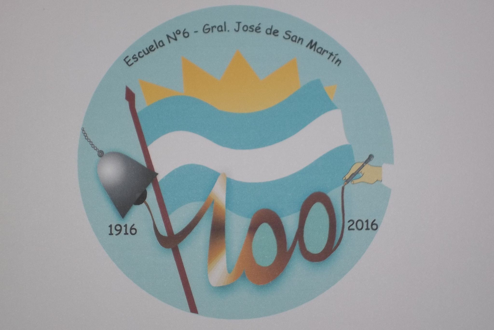

<div id="educacion" class="divisor">

    <div class="container px-4 py-5" id="featured-3">

        <h2 class="pb-2 border-bottom">Educacion.</h2>

        <div class="row g-4 py-5 row-cols-1 row-cols-lg-3">

            <div class="feature col">

                <div
                    class="feature-icon d-inline-flex align-items-center justify-content-center text-bg-primary bg-gradient fs-2 mb-3">
                    
                </div>

                <h3 class="fs-2">EEMN°2</h3>
                <p>Escuela de educacion media N°2 Nicolas Avellaneda.(2003-2005).</p>
                <p>Bachiller en administracion y gestion de las organizaciones.</p>
                <p>Tecnico en informatica personal y profesional.</p>
            </div>

            <div class="feature col">
                <div
                    class="feature-icon d-inline-flex align-items-center justify-content-center text-bg-primary bg-gradient fs-2 mb-3">
                    
                </div>

                <h3 class="fs-2">EEPN°6</h3>
                <p>Escuela de enseñanzas primarias N°6 Gral Jose de San Martin.(1994-2002).</p>
            </div>

        </div>

    </div>
</div>